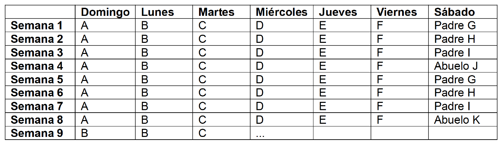
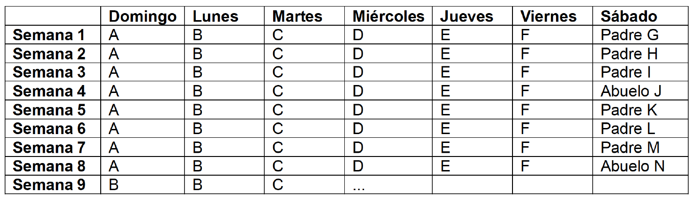
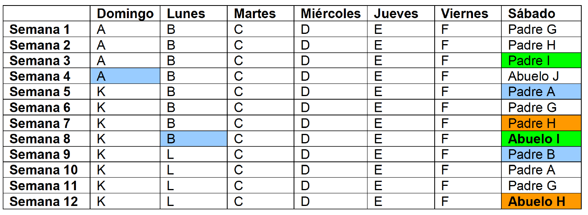

Backup
Tema 10 de 13 Cuarto curso, 1.º cuatrimestre ≈ 10 min de lectura
Temas de ENCO · 10/13
- 1. Formatos de Servidores - Racks y Blades
- 2. Centros de Procesamiento de Datos (CPDs)
- 3. Virtualización de Servidores
- 4. Dispositivos de Almacenamiento
- 5. Subsistemas de Disco
- 6. Fibre Channel y redes SAN
- 7. Almacenamiento IP
- 8. Sistemas de ficheros y almacenamiento en red
- 9. Virtualización del almacenamiento
- 10. Backup
- 11. Backup en red y software para backup
- 12. Archivado de la información
- 13. Hardware para backup
10.1 Qué es el backup y por qué hacerlo
Hacer backup es crear una copia de los datos para protegerse frente a su pérdida total o parcial. Parece sencillo, pero plantea varios retos: el medio donde guardar la copia, el tiempo que lleva, la política de backup, el backup en red, el mirroring remoto y, sobre todo, la recuperación.
Motivos para hacer backup:
- Errores de usuarios y de administradores.
- Fallos de hardware del sistema, de los discos (conviene tener RAID, pero RAID no sustituye al backup) y del software.
- Ataques, vandalismo y robos.
- Desastres naturales y de otro tipo.
- Conservar archivos durante mucho tiempo.
10.1.1 Prácticas parecidas
| Práctica | Qué hace |
|---|---|
| Backup | Mantiene al menos una copia de todos los datos, con regularidad; los backups nuevos suelen sustituir a los antiguos. Busca tener la versión más reciente de los ficheros |
| Archivado | Congela una versión de los datos en un momento dado, accesible en cualquier momento (tema 12) |
| Almacenamiento jerárquico | Mantiene en disco los datos muy usados y pasa a backup los poco usados, dejando en su lugar metainformación que indica dónde están |
| CVS (control de versiones) | Los backups nuevos no destruyen los anteriores: se conservan varias versiones |
10.2 Lo que puede salir mal
10.2.1 El peor caso
Un incendio destruye todo el edificio: también la máquina de backup, la metainformación sobre cómo se hicieron los backups, los servidores de NIS, NFS, CIFS/SMB y otros servicios… y las cintas de backup si estaban allí. Por eso las copias deben guardarse también fuera.
10.2.2 Datos sin copia
La principal causa de fallo en los backups es que se pierden datos de los que nunca se hizo backup. Hay que revisar las políticas cada vez que se añaden equipos o discos y, ante cambios importantes, hacer copias totales y conservarlas. Además, un backup sin metainformación puede ser inservible (no se sabrá cómo restaurarlo).
Caso real: "Validated, My Eye" (Jim Damoulakis)
Una empresa de biotecnología perdió una base de datos crítica en un servidor validado por la FDA. Al ir a restaurarla descubrieron que ese servidor llevaba unos tres meses sin backup: alguien lo había sacado de la planificación y, como no había "errores", nadie se dio cuenta. El problema llegó hasta el CEO.
10.2.3 ¿Se hace el backup como se espera?
Hay que revisar los logs, porque pueden pasar cosas como quedarse sin espacio en la cinta o disco, que el software no copie ficheros por problemas con sus nombres o rutas, o que los datos no estén donde creemos.
Caso real: "It Pays to Watch Your Logs" (Jim "Sparky" Donnellan)
Una aplicación de divisas guardaba parte de cada operación en la propia ruta del fichero (/opt/app/opus/transactions/.../USD/CAI/GBP/BONY/ask/19970615...). El tar de SunOS no admitía rutas de más de ~100 caracteres, y estas se pasaban por unos 9. El administrador llevaba tiempo copiando un árbol de directorios vacío, sin los ficheros del fondo. Si hubiera mirado los logs lo habría visto; no le renovaron el contrato.
10.2.4 Probar los backups
Hay que comprobarlos intentando recuperar ficheros, sistemas de ficheros y servidores completos, y repetir las pruebas cada vez que cambie el sistema de backup. Un backup que nunca se ha restaurado es solo una esperanza.
10.2.5 Formación
Hace falta suficiente personal y bien formado: ahorrar unos miles de euros en personal o formación puede costar cientos de miles en compensaciones u oportunidades de negocio perdidas.
10.3 Organizar el backup
10.3.1 Automatización
No se puede depender de un operador humano. Se usa software automático o scripts y robotización: robots de cintas (bibliotecas que cargan y descargan cintas solas), bibliotecas ópticas (en desuso) o discos duros.
Para entenderlo mejor
Tape Library / Autoloader — un autocargador de cintas en acción (vídeo, 1:27, enlazado en las diapositivas). Robots Move Data Inside NCAR's AMSTAR Digital Storage Library — robots moviendo cintas en una gran biblioteca de un centro de supercomputación (vídeo, 1:29, inglés, enlazado en las diapositivas).
10.3.2 Cuándo
- De noche: se modifican muy pocos ficheros y no se sobrecargan la red ni los clientes.
- En un mundo global siempre es de día en algún sitio, así que no hay "noche" para todos.
- Los backups muy grandes pueden empezar de noche y terminar de día.
10.3.3 Crecimiento del sistema
Al crecer pueden aparecer problemas con la red, el número de clientes, el volumen de datos que acepta el servidor de backup y el tamaño del medio.
10.3.4 Dónde guardar las copias
- Manualmente: el administrador etiqueta, cataloga y guarda las cintas o discos en lugar seguro (hay armarios ignífugos).
- Biblioteca de cintas: almacenamiento y organización automáticos.
- Empresas especializadas que recogen copias y las custodian fuera.
- Hoy se usa también la red para guardar una copia electrónica remota.
10.3.5 ¿Todo o solo una parte?
Copiar todo aumenta los datos a guardar, el tráfico de red, la carga de discos y CPU de los clientes y el tiempo. Pero copiar solo una parte tiene inconvenientes: ahorra poco espacio comparado con un backup incremental, deja fuera ficheros útiles (como pequeños cambios en la configuración del SO) y es más difícil de administrar.
10.4 Niveles de backup
| Nivel | Qué copia |
|---|---|
| 0 | Backup completo |
| 1 | Todo lo que ha cambiado desde el último nivel 0 |
| 2 a 9 | Todo lo cambiado desde el último backup de nivel inmediatamente inferior |
| Incremental | Todo lo cambiado desde el anterior backup, sea del nivel que sea |
(Fuente: W. Curtis Preston, Backup & Recovery.)
Cómo se restaura
Para recuperar el estado de un día hay que restaurar el último nivel 0 y, después, el último backup de cada nivel superior posterior a él, en orden. Con niveles altos cada copia es pequeña (rápida de hacer) pero la restauración necesita más cintas; con todo a nivel 0 cada copia es enorme pero se restaura con una sola.
10.4.1 El bit de archivo de Windows
Para facilitar el incremental, Windows (y antes MS-DOS) usa el bit de archivo: un atributo que se activa al crear o modificar un fichero. Cada backup incremental copia solo los ficheros con el bit activo y después lo desactiva.
El problema es que, aunque en teoría solo la herramienta de backup debería tocarlo, cualquier aplicación puede cambiarlo, así que no es totalmente fiable; es mejor un log que registre, a petición del administrador, todos los ficheros modificados.
Windows tiene además el backup diferencial: funciona como un incremental, pero no borra el bit de archivo, de modo que cada diferencial copia todo lo cambiado desde el último completo (equivale a un nivel 1).
10.5 Políticas de backup
Tres políticas típicas por semana:
| Política | Dom | Lun | Mar | Mié | Jue | Vie | Sáb |
|---|---|---|---|---|---|---|---|
| Nivel 0 diario | 0 | 0 | 0 | 0 | 0 | 0 | 0 |
| Nivel 0 semanal, nivel 1 diario | 0 | 1 | 1 | 1 | 1 | 1 | 1 |
| Nivel 0 semanal, niveles progresivos | 0 | 1 | 2 | 3 | 4 | 5 | 6 |
| Política | Copia diaria | Restaurar el sábado necesita |
|---|---|---|
| Nivel 0 diario | La más grande | Solo la cinta del sábado |
| 0 semanal + 1 diario | Crece cada día (todo desde el domingo) | Domingo (0) + sábado (1): 2 cintas |
| 0 semanal + progresivos | La más pequeña (solo lo del día) | Domingo, lunes, martes… sábado: 7 cintas |
10.5.1 Sistema abuelo-padre-hijo (GFS)
El esquema GFS (Grandfather-Father-Son) usa 3 niveles, por ejemplo: nivel 0 cada mes (abuelo), nivel 1 cada semana (padre) y backups diarios (hijo). Las cintas diarias (A–F, de domingo a viernes) se reutilizan cada semana; las de los sábados son padres o abuelos. Hay varias formas de implementarlo:

Variante 1: los padres G, H, I se reutilizan en rotación y el último sábado del mes se usa una cinta abuelo (J, luego K), que se guarda.
Variante 2: cada mes usa padres nuevos (G, H, I y luego K, L, M) y abuelos nuevos (J, N).
Promoción de cintas: las cintas van subiendo de categoría. La diaria A pasa a ser padre (sustituida por K), el padre I pasa a abuelo, y la cinta abuelo H vuelve a usarse cuando expira. Así ninguna cinta se gasta mucho más que las demás.Analogía
Como las fotos del móvil: las de esta semana las tienes todas (hijos), de los meses anteriores guardas una por semana (padres) y de años anteriores una por mes (abuelos). Cuanto más atrás, menos detalle, pero nunca te quedas sin nada.
Para entenderlo mejor
Backup rotation scheme — Wikipedia — GFS y otros esquemas de rotación de cintas (artículo, inglés).
10.6 Buenas prácticas
- Hacer backup no solo de los datos, también de la metainformación.
- Saber de qué dispositivos se hace backup, cómo están particionados y cómo están configurados los gestores de volúmenes (puntos de montaje, RAID…).
- Documentar y salvar los ficheros de configuración (DHCP, NFS, CIFS/SMB, NIS…).
- Conocer todos los detalles de los sistemas con que se trabaja.
10.x Ideas clave
- Backup = copia para protegerse de pérdidas (errores humanos, fallos de HW/SW, ataques, desastres). Retos: medio, tiempo, política, red, recuperación.
- Distinto de archivado (congelar versión), almacenamiento jerárquico (lo poco usado a backup) y CVS (varias versiones).
- Peor caso: incendio que destruye todo, cintas incluidas → copias fuera.
- Fallos típicos: datos nunca incluidos en el backup, no mirar los logs, no probar la restauración, sin metainformación, poco personal.
- Automatizar (scripts, robots de cintas), de noche, prever el crecimiento, guardar fuera (armarios ignífugos, empresas, red).
- Niveles: 0 completo; n copia lo cambiado desde el último de nivel inferior; incremental desde el último backup. Bit de archivo (poco fiable) y diferencial (no borra el bit).
- Políticas: 0 diario, 0 semanal + 1 diario, 0 semanal + progresivos (copias pequeñas, restauración larga). GFS: abuelo mensual, padre semanal, hijo diario; con o sin promoción de cintas.
- Guardar también metainformación y configuración.